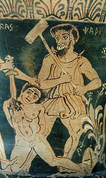

Etrüsk mitolojisi
- Etrüsk mitolojisi veya Etrüsk dini, Etrüsklerin mitolojik yazın ve inançları ile birlikte yaptıkları dini adet ve uygulamaların bütünüdür.
- Etrüskler Kuzey İtalya'dan gelen, zaman içinde Roma'ya kenetlenmiş, kökeni bilinmeyen bir ulustur. Birçok Etrüsk mitolojisi öğesi, tanrı ve tanrıçası Roma mitolojisi'ne girmiştir. Bunların bir kısmı doğrudan girerken, bir kısmı zaten var olan ve benzer özellikler taşıyan öğelere etki ederek, bir tür sentez sonucu girmiştir.
- Etrüsklerden geriye çok fazla yazın kalmamış, Etrüsk dili dahi bugün tam olarak anlaşılamamıştır. Ayrıca Romalı yazarların Etrüsklere, dillerine ve dinlere dair kaleme aldığı yazınlar da bugüne ulaşamamıştır. Tüm bu sebepler nedeniyle haklarında çok az şey bilinen Etrüsklerin dini ve mitolojik inanç, yaşayış ve yapılanmaları hakkında çok daha az şey bilinmektedir.
- Arkeolojik bulgular da sınırlıdır. Örneğin bugüne ulaşmış mezar kitabelerinde genelde ölen kişinin ismi geçerken, tapınaklara sunulan adak plakalarında sadece adağın yapıldığı tanrı veya tanrıçanın ismi geçer. Bu tip bilgiler de Etrüsk mitolojisine dair ancak yüzeysel bir idrakın gelişebilmesine olanak tanımıştır. Zaten Etrüsk dilinin tamamen anlaşılamamış olması, ele geçecek bulguların da en etkili şekilde kullanılmalarını kısıtlamaktadır.
- Bununla birlikte bugüne ulaşan büyük oranda ikonografik materyal bulunmaktadır. Vaso süslemeleri, anıtlar, heykeller, taşlar, rölyefler ve kabartmalardaki ikonografi bize Etrüsk mitolojisi hakkında bilgi sunabilir. Her ne kadar bu ikonografi yoğun bir Helenistik etki altında kalsa ve Yunan mitolojisinden tasvirler içerse de, Etrüsk mitolojisi ile Yunan mitolojisi arasında kurulan bağlar Etrüsk mitolojisini, en azın karşılaştırmalı bir şekilde, anlamaya yardımcı olur niteliktedir. Örneğin Etrüsk mitolojisindeki tanrıların Yunan mitolojisindeki denkleri ve bazı daha yerel tanrıların Yunan mitolojisindeki benzerleri bu ikonografilerden anlaşılabilir. Bu da en azından mitolojik yapılanma ve anlayışa dair önemli ipuçları barındırır.
Etrüsk tanrı ve tanrıçaları
- Etrüsk mitolojisindeki çoğu tanrının Romalı ve İtalik denkleriyle olan ilişkisi ve hatta isimlerini bu denklerinden almaları Etrüsk dininin İtalyan Yarımadası'ndaki diğer milletlerin dinleriyle birlikte aynı zaman diliminde geliştiğinin düşünülmesine yol açmıştır. Genel görüşe göre dini yapı MÖ 1. binyılın başlarında gelişmeye başlamıştır. Etrüsk panteonu Yunan ve Roma panteonları gibi bir ana tanrı barındırır. Zeus ve Jüpiter'e denk olan bu tanrı Tinia veya Tin olarak anılır. İsminin anlamı "parlayan gün" olan bu figür tasvir anlamında büyük oranda Zeus'a benzer. Yunan Hera veya Romalı Juno ile denk olan ve Tinia'nın eşi konumunda olan Uni isimli bir tanrıça bulunmaktadır. Etrüsk mitolojisindeki, Roma benzeri üçlemeTinia, Uni ve Menerva şeklindedir. Menerva, Romalı Minerva'dan köken alan akıl tanrıçasıdır.
- Bunların dışında birçok Yunan mitolojisi kökenli figür, çoğu zaman tüm mitleriyle birlikte, Etrüsk mitolojisine nüfuz etmişlerdir. Örnek olarak Apulu verilebilir. Apulu Yunan tanrısıApollo'nun dengidir ve gerek isim gerekse tüm mitleriyle Yunanlardan Etrüsklere geçmiştir. Bunun dışında ünlü Yunan kahramanı Herkül de Hercle ismiyle Etrüsk mitolojisindeki yerini almıştır. Bunlar ve birçok tanrı ve tanrıçanın özelliklerinin yanı sıra isimlerinin de Yunan mitolojisindeki isimlerden köken almış olması Etrüsk mitolojisindeki Yunan ve Roma etkisini aşikar kılmaktadır.
- Etrüsk mitolojisinde yer alan Tinia dışında tanrılara bakılırsa su tanrısı Nethuns, güneş tanrı Usil, orman tanrısı Selvans, zaman tanrısı Satre zikredilebilir. Yunan ve Roma mitolojileriyle olan yakın ilişki bu tanrılarda da göze çarpar. Satre Roma mitolojisindeki Satürn ile denkken Usil Yunan mitolojisindeki Helios ile denktir.
- Akıl tanrıçası Menerva, aşk tanrıçası Turan, yer altı tanrıçası Culsu ve ana tanrıça Cel ati adı belirtilebilecek önemli tanrıçalardandır. Etrüsk mitolojisindeki önemli ve güçlü arz tanrıçası Cel ati'nin ismini oluşturan iki sözcük "dünya" ve "ana"dırlar; yani onun ana tanrıça karakteri ismiyle barizdir. Yunan Demeter ile Romalı Terra Mater'e denktir. Bunların dışında daha önemli tanrıçalarla ilişkilendirilmiş daha küçük tanrıçalar bulunur, bunlara özgün bir isim ile Lasa denir. Örneğin Alpanu, Achavisur ve Zipna aşk tanrıçası Turan'ın yardımcısı Lasalardır.
Etrüsk dininin özellikleri
- Etrüsk mitolojisindeki Yunan etkisi yoğun olsa ve neredeyse her noktaya nüfuz etmiş olsa da, özgün temellerinin yanı sıra Etrüsklerin bu tip etki sonucu dahil olmuş figürleri geliştirdiği de bilinmektedir. Bunun en bariz örneklerinden biri Etrüsk mitolojisindeki yer altı/ahiret inancının yapısı, özellikleri ve tasviridir. Etrüsk yer altı dünyası Yunandakinin temellerine sahiptir. Örneğin kayıkçı Kharon, Kharun (veyaCharun) ismiyle Etrüsk mitolojisinde yer alır. Burada ölecek olanların canını alırken kullanacağı büyük bir çekiçle tasvir edilmiştir. Bununla birlikte Etrüsk yer altı inancının barındırdığı demonoloji Yunandakinden çok daha gelişmiştir. Eril ve dişil birçok özgün iblisin yanı sıraYunan mitolojisindeki iblis ve canavarlar da bulunur.
- Bunların dışında belki de Etrüsk din ve mitolojisini Roma ve Yunan'dan ayıran en önemli noktalardan biri tanrıların oluşturduğu bir dinî sistemin varlığıdır. Romalıların Etrusca disciplina diye andıkları bir tür Etrüsk din bilimi mevcuttur ve Etrüskler bunun tanrıların insanlara ilham etmesi yoluyla, tanrıların işi olduğuna inanmıştırlar. İlham edilen şeylerin yazılması kutsal kitap fikrini de doğurmuştur.
- Bu bilim veya sistem İbrahimi Dinler gibi peygamber benzeri bir öğe de barındırır. Ayrıca içinde birçok farklı gelenek bulunur. Bu geleneklerden biri Tarquinia'dandır. Bu geleneğe göre dünyanın doğurduğu Tages isimli bir çocuk bir köylü tarafından ıssız bir arazide bulunur. Çocuk mucizevi bir şekilde konuşabilen çocuk etrafa ona ilham olunmuş dini mesajları verir ve daha sonra da esrarengiz bir biçimde kaybolur. Etrüsklerin en çok etkilendiği Yunan ve Roma din ve mitolojilerinde bu tip bir peygamber benzeri kişiye rastlanmadığı gibi bu tip sembolizm ancak çeşitli millet, ülke, uygarlık veya kahramanların kökenine dair anlatılarda kullanır.
- İlham (veya vahiy) kültürü kutsal kitap edebiyatına yol açmıştır. Örneğin bu kutsal kitaplarından biri yıldırım kitaplarıdır ve yıldırımlara dini bir bakış açısı barındırır. Ayrıca Etrüsk dininde kutsal kitaplarla birlikte özgün bir ruhban sınıfıda mevcuttur. Bu sınıftan kişiler çok saygındılar ve Etrusca disciplina uzmanlarıydılar. Bu sebepten örneğin Yunandaki dini görevlilerden çok daha farklı özelliklere sahiptirler. Daha sonra bu ruhban sınıfı Roma İmparatorluğuna yayılmış ve Roma dinine nüfuz etmiştir.
- Roma İmparatorluğu'ndaki paganist yapıya adapte olan ve Roma diniyle çok yakın bağlara sahip olan Etrüsk dini, kendisi Roma mitolojisinden etkilenirken Roma mitolojisinin ve özellikle dini yapısını etkilemiştir. Bunun en bariz göstergesi Roma sistemine Etrüsklerden geçmiş olan haruspexler yani özel ruhban sınıfıdır. Özellikle ibadet, ritüel anlamında Etrüsk dininin Romadaki dini anlayışa önemli katkıları olmuştur. Hristiyanlığın yükselişiyle Roma paganizmiyle birlikte Etrüsk dini de büyük zarar görmüş ve sonunda paganist inançların yasaklanmasıyla, Roma diniyle birlikte Etrüsk dini de yok olmuştur.
Etrüsk mitolojisi figürleri
Bu liste Etrüsk mitolojisindeki figürleri barındırır. Burada figür ile kastedilen bu mitolojideki her türlü yaratık ve nesnedir, buna put, tanrı ve tanrıçalar da dahildir.
Açle:Truva Savaşı'nın efsanevi kahramanlarından, Yunan Aşil'den.
Aita:Yer altı dünyası tanrısı ve ölülerin hükümdarı, Yunan Hades ve Greko-Romen Plüto ile denktir.
Aivas:Yunan kahramanları Ajax, Telamon’un oğlu ve Ajax, Oileus’un oğlu’nun dengidir.
Alpan:Lasa’lardan biri ve aşk tanrıçası. Büyük ihtimalle Yunan tanrıça Persephone’nin dengi. Sanatta genellikle kanatlı biçimde çıplak veya yarı çıplak resmedilmiştir.
Ani:Cennetin en üst katında yaşayan gök tanrısı. Dilbilimsel açıdan Roma tanrısı Janus ile ilişkilendirilebilir. Dişi dengi, eşi Ana idi.
Aplu:Gök gürültüsü ve şimşek tanrısı. Açık bir biçimde Yunan tanrısı Apollo'dan türetilmiştir.
Artume:Artumes veya Artames. Bereket, orman, doğa, gece, ay ve ölüm tanrıçası. Yunan tanrıça Artemis ile ilişkilidir.
Atunis:Popüler yaşam-ölüm-geridönüş (tekrar doğum) Adonis'in Etrüsklü enkarnasyonu, Turan'ın eşi.
Cautha:Bir güneş tanrıçası, ve güneşin kızı. Aynı zamanda başlangıçların ve şafağın tanrıçasıydı.
Cel:Arz tanrısı, Yunan Gaia'nın dengi. Ati Cel ("Toprak/Dünya Baba") veya Apa Cel ("Toprak/Dünya Ana") olarak yorumlanırdı.
Kharontes:Bir iblis (cin) türü, büyük ihtimalle dilbilimsel açıdan Kharon ile ilişkili.
Kharun:Yeraltı dünyasında ölülerin ruhlarına işkence eden bir iblis, cin. Aynı zamanda yeraltı dünyasının girişinin bekçisidir. Akbababurunlu, sivri uçlu kulaklı, kızıl saçlı, tüylü kanatlı mavi bir ifrit olarak betimlenmiştir. İnsanları bir çekiçle, zaman zaman da bir balta ile öldürürdü. Ayrıca bazen kızıl saçlı, sakallı bir adam olarak da tasvir edilmiştir. Yunan mitolojisindeki Kharon'a denktir.
Culsans:Kapıların ve eşiklerin tanrısı, iki yüzlü Roma tanrısı Janus'un dengidir.
Culsu:Geçitlerle ilgili bir yer altı dişi ifriti. Meşale ve makas onun simgelerindendir. Çoğunlukla Culsans'ın yanında temsil edilmiştir.
Easun:Efsanevi Yunan kahramanı Jason'un Etrüsk mitolojisindeki dengi.
Evan:Kişisel ölümsüzlük tanrısı ve Lasa'lardan biri. Kullanımı yaygın olan Evan ismiyle bir ilişkisi yoktur.
Februus:Ölülerin ve saflaşmanın tanrısı. Romalılarca Februalia festivalinde tapılırdı. Şubat ayının ismi ve Roma sıtma tanrısı Febris'in ismi onun isminden türemiş olabilir.
Feronia:Pek anlaşılamamış kırsal bir tanrıçadır. Temel olarak ona tapan çeşitli Roma kültleri sayesinde bilinmektedir.
Fufluns:Bitki yaşam tanrısı, mutluluk, sağlık, ve herşeyin gelişimi ile ilgilidir. Semia'nın oğludur.Fufluna ya da diğer bir ismi Pupluna olan ve Romalıların Populonia olarak isimlendirdiği şehirde tapınılmıştır. Kısaca Romalılar tarafından sahiplenilmiştir. Dionysus'un dengi olabilir.
Hercle:Güç ve su ile ilgisi olan, efsanevi Herkül'ün dengidir.
Horta:Ziraat tanrıçası.
Laran:Savaş tanrısı.
Lasa: Turan'a eşlik eden tanrı ve tanrıçalar. Aşk tanrıları. Mezar bekçiliği de yaparlar.
Lasa Vecu:Kehanet tanrıçası, nemf Vegoia ile ilgilidir.
Leinth : Aita ile birlikte yeraltı dünyasının kapısında bekleyen yüzü olmayan tanrıça.
Lethans:Yeraltı dünyasının koruyucu tanrıçası.
Losna:Ay tanrısı, okyanusla da alakalı. Yunan tanrıçası Leucothea ile alakalı.
Mania:Etrüsklerde ve Romalılarda ölüm tanrıçası. Yunan delilik tanrısı Mania ile alakası yoktur. Mantus ile birlikte hükmetmiş ve Lares, Manes, hayaletler, ve gecenin diğer ruhlarını doğurmuştur.
Mantus:Yeraltı tanrısı ve Mania'nın kocası.
Maris:Tarım ve bereket tanrısı. Romalıların tanrısı Mars'ın kaynağıdır.
Menrva:Bilgelik, savaş, sanat, okul, ve ticaret tanrıçası. Yunan Athena ve Romalı Minerva ile alakalı.
Nethuns:Su kuyuları tanrısı. Sonradan tüm nem, deniz ve suların tanrısı olmuştur. Yunan Poseidon ve Romalı Neptün ile denktir.
Nortia:Şans ve kader tanrıçası.
Persipnei:Yeraltının kraliçesi. Yunan Persephone ve Romalı Proserpina ile denktir.
Satres:Zaman ve gereklilik tanrısı. Roma tanrısı Satürn'ün çıkış noktasıdır.
Selvans:Orman tanrısı, Roma tanrısı Silvanus ile akrabadır ve Yunan Silenus ile ilişkilidir.
Semla:Fufluns'un annesi, arz tanrıçası. Büyük ihtimalle Yunan tanrıça Semele ile ilişkili.
Sethlans:Ateş tanrısı. Yunan Hephaestus ve Romalı Vulcan ile denktir.
Tages:Bilgelik tanrısı. Jove'in ya oğlu ya da torunudur.
Taitle:Yunan mitolojisi figürlerinden Daedalus'un Etrüsk formu.
Tarchon:Etrüsklerin bir kültürel kahramanıdır. Kardeşi Tyrrhenus ile birlikte oniki şehirlik Etrüsk Federasyonu'nu kurmuştur.
Tecum:Lucomenes yani yönetici sınıfın tanrısı.
Thalna:Doğum tanrıçası ve Tinia'nın karısı.
Thesan:Hayatın yaratılmasıyla ilişkilendirilen şafak tanrıçasıdır. Romalı Aurora ve Yunan Eos ile alakalıdır.
Thethlumth:Kader ve yeraltı tanrısı.
Thufltha:Bir Erinyes, Tinia adına cezaya çarptırır.
Tinia:Adı Tins olarak kısaltılmıştır. Etrüsk Tanrılarının baş Tanrısı, göklerin yöneticisi, Uni'nin kocası ve Hercle'nin babasıdır. Yunan Tanrısı Zeus ve Roma Tanrısı Jüpiter ile ilişkilendirlmektedir.
Tiv: Ay ilahı, büyük ihtimalle Cermen Tanrısı Tyr ile ilişkili.
Tluscva:Bir çift toprak tanrısı Tellus ve Tellumo.
Tuchulcha:Yeraltı dünyasının dişi şeytanı. Yarı insan, yarı eşekti ve saçları yılanlar ve akbaba gagalarından oluşuyordu.
Turan:Sevgi ve yaşam tanrıçası ve Vulci ismindeki Etrüsk şehrinin koruyucusudur. Turan, resimlerde genellikle kanatlı bir genç kız şeklinde tasvir edilirdi. Güvercinler ve siyah kuğular onun kutsal hayvanlarıydı ve Turan'ın maiyeti Lasas diye anılırdı. Turan ayrıca Maris'in karısıydı. Yunan Tanrısı Aphrodite ve Roma Tanrısı Venus ile ilişkilendirilmektedir.
Turms:Ticaret ve mal tanrısı, tanrıların habercisi. Hermes ve Merkür'e benzer.
Tvath:Yeniden yaşama dönüş ve ölülere sevgi tanrıçası, Yunan tanrısı Demeter ile ilişkilidir.
Tyrrhenus:Bir Etrüsk kültürü kahramanıdır. Tarchon'un ikiz erkek kardeşidir.
Uni:Etrüsk mitolojisinin baş tanrıçası, Tinia'nın eşi, Hercle'in annesi, Perugia'nın efendisidir.
Usil:Güneş tanrısı.
Vanth:Kanatlarında göz olan yeraltı şeytanı. Ölüm habercisidir, ölüm döşeğindeki insanlara ölümde yardımeder. Sonralarda adaleti temsil etmiştir.
Veive:İntikam tanrısıdır ve Maris ile alakalıdır.
Veltha:Yeryüzü tanrısı. Sonradan baş tanrı olmuştur. Etrüsk medeniyetinin efendisidir. Romalı mevsim tanrısı Vertumnus'un ilhamıdır.
Vetis:Yıkım ve ölümün yer altı (ahiret) tanrısı.
Vicare:Taitle'nin oğlu, Yunan mitolojisindeki Icarus'dan türemiştir.